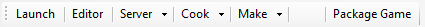
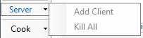
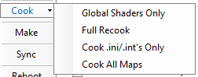

UDN
Search public documentation:
DevelopmentKitUFEJP
English Translation
中国翻译
한국어
Interested in the Unreal Engine?
Visit the Unreal Technology site.
Looking for jobs and company info?
Check out the Epic games site.
Questions about support via UDN?
Contact the UDN Staff
中国翻译
한국어
Interested in the Unreal Engine?
Visit the Unreal Technology site.
Looking for jobs and company info?
Check out the Epic games site.
Questions about support via UDN?
Contact the UDN Staff
Unreal Frontend
ドキュメントの概要: UDK 付属の Unreal Frontend (フロントエンド) ツールの説明。 ドキュメントの変更ログ: John Scott により更新。概要
 Unreal Frontend (UFE) は、Unreal エコシステムにおける多数の共通タスクを一貫した方法で実行できるようにするためのツールです。一般的に、これらのタスクには以下が含まれます。
Unreal Frontend (UFE) は、Unreal エコシステムにおける多数の共通タスクを一貫した方法で実行できるようにするためのツールです。一般的に、これらのタスクには以下が含まれます。 - ゲームを起動
- サーバーを開始
- ローカルサーバー用のサーバーにクライアントを追加
- エディタを実行
- スクリプトコードをコンパイル
- データをクッキング
メニュー
File > Exit (終了) - UFE を終了します。 Edit > Copy to Clipboard (クリップボードにコピー) > Single Player URL (シングルプレーヤー URL) - 現在のプラットフォームでシングルプレーヤーゲームの起動に使う URL をクリップボードにコピーします。 Edit > Copy to Clipboard > Multiplayer URL (マルチプレーヤー URL) - 現在のプラットフォームでマルチプレーヤーゲームの起動に使う URL をクリップボードにコピーします。 Edit > Copy to Clipboard > Compile Command Line (コンパイルコマンドライン) - 現在の設定のスクリプトをコンパイルするのに使う URL をクリップボードにコピーします。 Edit > Copy to Clipboard > Cooking Command Line (クッキングコマンドライン) - 現在のゲーム、プラットフォームおよび設定のクッキングに使う URL をクリップボードにコピーします。 Edit > Clear Output Window (出力ウィンドウをクリア) - 出力ウィンドウの内容を消去します。アクションツールバー

Launch (起動) - 現在のプラットフォームで、現在の設定を使いシングルプレーヤー モードで現在のゲームを起動します。 Editor (エディタ) - 現在の設定を使い、現在のゲームのエディタを起動します。 Server (サーバー) - 現在のプラットフォームで現在の設定を使い、現在のゲーム用にサーバーを開始します。
Server > Add Client (クライアントを追加) - 現在のプラットフォームで現在の設定を使い、現在のゲームの新規インスタンスを作成して PC 上のローカルホストへの接続を試みます。このアクションはコンソールからは実行できません。 Server > Kill All (すべて終了) - UFE が作成した PC 上のすべてのゲームインスタンスを終了します。このアクションはコンソールからは実行できません。 Cook (クック) - 現在のプラットフォームの現行ゲームのデータを、現在の設定と共にクックします。
Cook > Global Shaders Only (グローバルシェーダーのみ) - グローバルシェーダーのみクックします。 Cook > Full Recook (完全な再クック) - クッカにすべてのコンテンツを再クックさせます。前回のクッキング時にキャッシュされたデータはすべて消去されます (-full)。 Cook > Cook .ini/.int's Only (ini/int のみクック) - .ini および .int ファイルをすべてクックします。ローカライズファイルまたは設定だけ変更した場合は、これを選択すると時間を節約できます (-inisonly)。 Make - 現在選択されているゲームのスクリプトを、現在選択されているクッキング/コンパイル設定を使いコンパイルします。 Package Game (ゲームパッケージを作成) - ゲームのファイルとショートカットに名前を付け、Epic 提供のバイナリと、クッキングしたコンテンツをパッキングし、配布用のスタンドアロンインストーラーを作成します。タブ
UFE の機能の大半は、インターフェース左側の一連のタブ上に展開されています。 タブ間を素早く移動するには、F1 と F2 キーを使います。Game タブ
 [Game] タブには、現在選択されているゲームを UFE で起動する方法を制御するためのオプションがあります。.
Map To Play (プレイマップ) - [Launch] または [Server] ボタンからゲームを起動したときにロードされるマップ。
(Use cooked map) (クックしたマップを使用する) - このチェックボックスを選択した場合、_[Launch]_ または [Server] ボタンからゲームを起動すると、Cooking タブ の [Maps to Cook] テキストボックス内の最初のマップを使用します。
Extra Options (その他のオプション) - 起動時にゲームに渡すその他のオプションのリスト。オプションはスペースで区切り、エンジンのオプションには接頭辞 -、ゲームのオプションには ? を付ける必要があります。
Exec Commands (実行コマンド) - 起動時にゲームに実行するコマンドのリスト。
No Sound (サウンドなし) - ゲーム起動時にサウンドを有効にするかどうかを制御します (-nosound)。
No VSync (VSync なし) - ゲーム起動時に VSync を有効にするかどうかを制御します (-novsync)。
Multi-threaded (マルチスレッド) - マルチスレッドまたはシングルスレッド (-onethread) のどちらを使ってゲームを起動するかを制御します。
Clear UnrealConsole Window (UnrealConsole ウィンドウをクリア) - 起動中のゲームに関する UnrealConsole ウィンドウの出力内容を消去するかどうかを制御します。
CaptureFPSChartInfo - FPS チャートバケットを取り込むかどうかどうかを制御します (?CaptureFPSChartInfo=1)。
Number of Clients (クライアント数) - これはマルチプレーヤーゲームの開始時に PC とコンソールの両方で使用されます。自動的に作成され、サーバーに接続するクライアントの数を指定します。[Server] > [Add Client] をクリックしたときに追加作成されるクライアントの数もこの値が決定します。
Server Type (サーバータイプ) - [Server] ボタンをクリックしたときに作成されるサーバーのタイプを指定します。
[Game] タブには、現在選択されているゲームを UFE で起動する方法を制御するためのオプションがあります。.
Map To Play (プレイマップ) - [Launch] または [Server] ボタンからゲームを起動したときにロードされるマップ。
(Use cooked map) (クックしたマップを使用する) - このチェックボックスを選択した場合、_[Launch]_ または [Server] ボタンからゲームを起動すると、Cooking タブ の [Maps to Cook] テキストボックス内の最初のマップを使用します。
Extra Options (その他のオプション) - 起動時にゲームに渡すその他のオプションのリスト。オプションはスペースで区切り、エンジンのオプションには接頭辞 -、ゲームのオプションには ? を付ける必要があります。
Exec Commands (実行コマンド) - 起動時にゲームに実行するコマンドのリスト。
No Sound (サウンドなし) - ゲーム起動時にサウンドを有効にするかどうかを制御します (-nosound)。
No VSync (VSync なし) - ゲーム起動時に VSync を有効にするかどうかを制御します (-novsync)。
Multi-threaded (マルチスレッド) - マルチスレッドまたはシングルスレッド (-onethread) のどちらを使ってゲームを起動するかを制御します。
Clear UnrealConsole Window (UnrealConsole ウィンドウをクリア) - 起動中のゲームに関する UnrealConsole ウィンドウの出力内容を消去するかどうかを制御します。
CaptureFPSChartInfo - FPS チャートバケットを取り込むかどうかどうかを制御します (?CaptureFPSChartInfo=1)。
Number of Clients (クライアント数) - これはマルチプレーヤーゲームの開始時に PC とコンソールの両方で使用されます。自動的に作成され、サーバーに接続するクライアントの数を指定します。[Server] > [Add Client] をクリックしたときに追加作成されるクライアントの数もこの値が決定します。
Server Type (サーバータイプ) - [Server] ボタンをクリックしたときに作成されるサーバーのタイプを指定します。 - Listen (リッスン) - 対戦の主催者プレーヤーとしてサーバーを開始します。
- Dedicated (専用) - 対戦に参加できない専用サーバーとして開始します。
Cooking タブ
 [Cooking] タブには、データのクッキング方法を制御するオプションがあります。
Maps to cook (クック対象マップ) - このテキストボックスには、クックするマップのスペース区切りリストが入ります。
Import Map List (マップリストをインポート) - このボタンを使って、マップリストを [Maps to Cook] テキストボックスにインポートします。
Languages to Cook/Sync (クック/同期する言語) - クッキングまたは同期を行う言語。
Run Local Game After Cook/Sync (クック/同期後、ゲームをローカル起動する) - クッキング/同期が終了するとシングルプレーヤーゲームを起動します。
Show Balloon After Cook/Sync (クック/同期後、バルーン表示する) - コマンドレットの終了時に UFE がフォーカスを受けていない場合に、バルーンツールヒントを使って終了したことを知らせるかどうかを指定します。
Force Seek Free Recook (シークフリーの再クックを強制する) - すべてのシークフリーパッケージを強制的に再クックします (-recookseekfree)。
Skip Automatic Script Compilation (スクリプトの自動コンパイルを省略する) - これを選択した場合、クッカの実行前に最新スクリプトかどうかを確認するステップは省略されます。
No Loc Cooking (ローカライズ用のクッキングを行わない) - 多言語リリースに必要な追加作業を行いません。
Disable package compression (パッケージ圧縮を無効にする) - パッケージの圧縮を無効にします。
[Cooking] タブには、データのクッキング方法を制御するオプションがあります。
Maps to cook (クック対象マップ) - このテキストボックスには、クックするマップのスペース区切りリストが入ります。
Import Map List (マップリストをインポート) - このボタンを使って、マップリストを [Maps to Cook] テキストボックスにインポートします。
Languages to Cook/Sync (クック/同期する言語) - クッキングまたは同期を行う言語。
Run Local Game After Cook/Sync (クック/同期後、ゲームをローカル起動する) - クッキング/同期が終了するとシングルプレーヤーゲームを起動します。
Show Balloon After Cook/Sync (クック/同期後、バルーン表示する) - コマンドレットの終了時に UFE がフォーカスを受けていない場合に、バルーンツールヒントを使って終了したことを知らせるかどうかを指定します。
Force Seek Free Recook (シークフリーの再クックを強制する) - すべてのシークフリーパッケージを強制的に再クックします (-recookseekfree)。
Skip Automatic Script Compilation (スクリプトの自動コンパイルを省略する) - これを選択した場合、クッカの実行前に最新スクリプトかどうかを確認するステップは省略されます。
No Loc Cooking (ローカライズ用のクッキングを行わない) - 多言語リリースに必要な追加作業を行いません。
Disable package compression (パッケージ圧縮を無効にする) - パッケージの圧縮を無効にします。